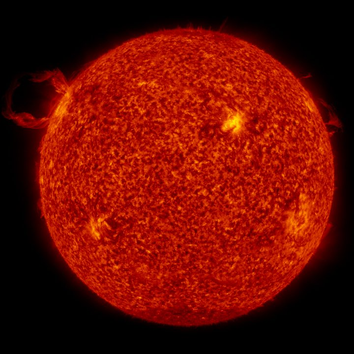

O Sol é a estrela no centro do Sistema Solar. É uma gigantesca esfera de gás quente, formada principalmente por hidrogênio e hélio, que produz luz e calor por meio de reações de fusão nuclear em seu núcleo. Sua gravidade mantém planetas, asteroides e cometas girando ao seu redor, e sua energia torna possível a vida na Terra.
Cerca de 5.500 °C na superfície e 15 milhões de °C no núcleo
1,39 milhão de km de diâmetro (109 vezes o da Terra)
Cerca de 150 milhões de km